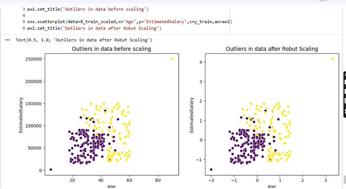

scaling procedure
- before any type of scaling, always do a train test split.
-
always fit the scaler to the train set, it will learn the parameters.
- in case of StandardScaler : the parameters learnt are mean and standard deviation of the training data.
- in case of MinMaxScaler : the parameters learnt are min and max values of the training data.
- in case of Mean Normalisation : the parameters learnt are mean, max, min values of the training data.
- in case of MaxAbsScaler : the parameters learnt are maximum absolute value of the training data.
- in case of RobustScaler : the parameters learnt are median and interquartile range of the training data.
- then using these parameters transform the training and the test sets.
when to use normalisation vs standardisation ?
- ask if feature scaling is required ?
- most of the problems will be solved using standardisation.
-
normalisation has 4 techniques :
-
minmax scaling : to be used when you know beforehand, the min and max value of your numerical quantity.
real life usecase : during image processing, we use CNN, and the color channels min value = 0, max value = 255, in this case we use MinMaxScaler. - robust scaling : when your data has outliers.
- mean normalisation : when you are working with centered data.
- max absolute scaling : when dealing with sparse data (meaning lots of 0's), sparse matrix.
-
minmax scaling : to be used when you know beforehand, the min and max value of your numerical quantity.
- when you have no idea -> go with StandardScaler.
robust scaling example
below is where i tried RobustScaler on data containing outliers :

after scaling we can see that :
while the outliers are still present, they are not compressed into the main cluster unlike MinMaxScaler. this is because RobustScaler scales features using statistics that are robust to outliers, i.e the median and the interquartile range (IQR).